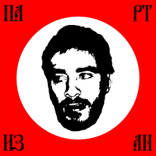
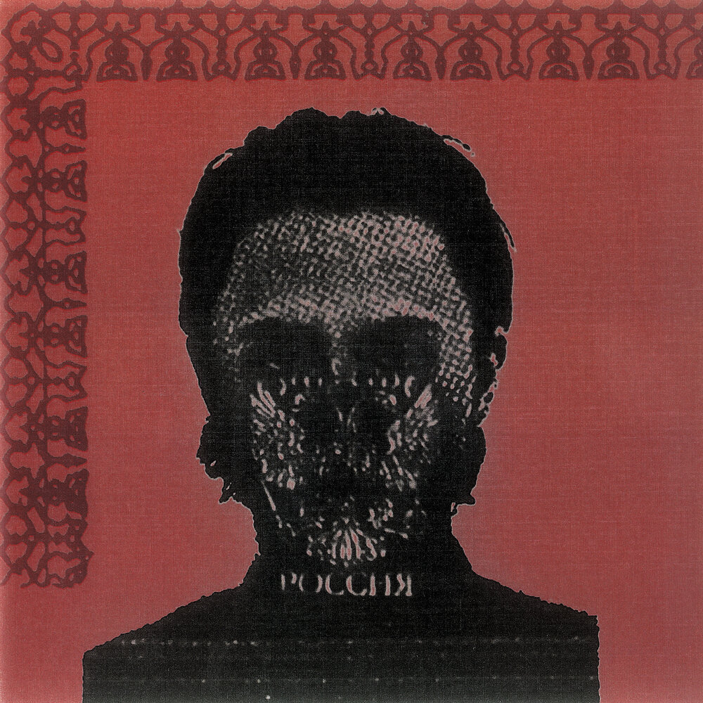
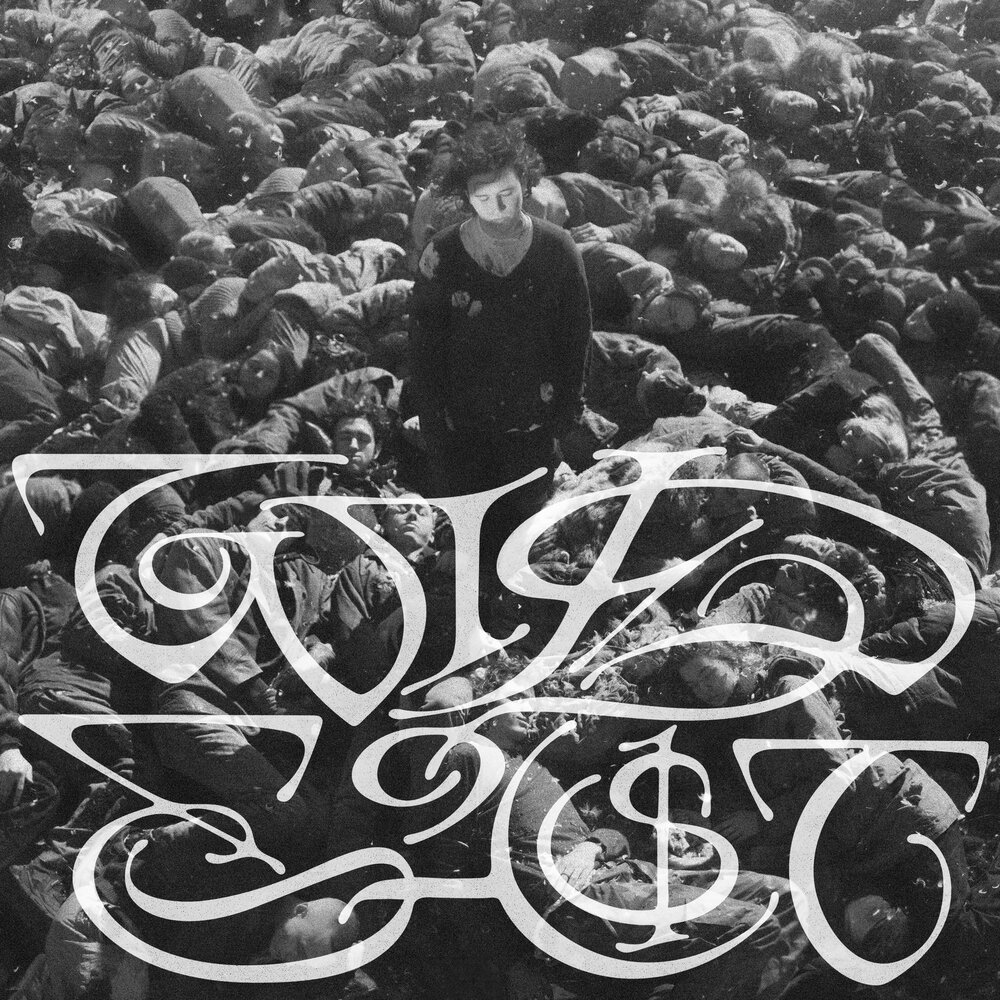
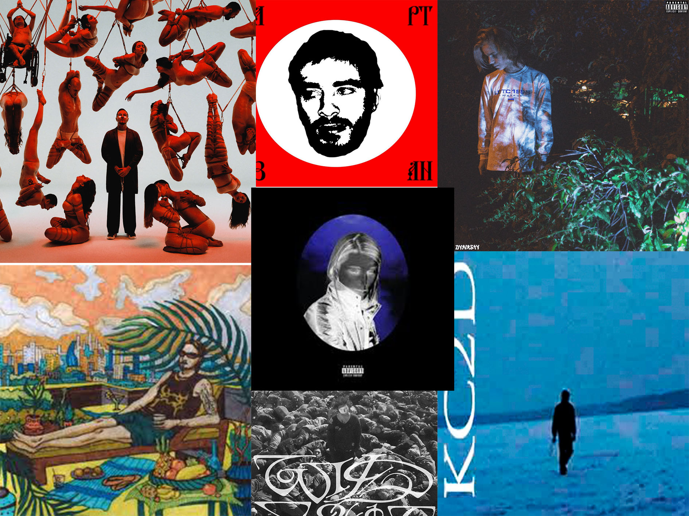

Почему тема важна
Музыка отражает эпоху и помогает обществу осмыслять такие темы, как свобода, идентичность, память и социальные перемены.
Учебный сайт о том, как музыкальные альбомы влияют на культуру, общественные настроения, личную память и восприятие целых эпох. Мы разобрали три значимые отечественные пластинки и объяснили, почему музыка — это не только развлечение, но и форма общественного высказывания.
Музыка отражает эпоху и помогает обществу осмыслять такие темы, как свобода, идентичность, память и социальные перемены.
Три альбома российских исполнителей — Хаски, Boulevard Depo и Saluki — с рецензиями, обложками и анализом общественного значения.
Пять разделов: введение, каталог альбомов, влияние музыки, наши предпочтения, инструменты создания и роли команды.
Переходите в любой раздел через боковое меню или по ссылкам ниже.
Три пластинки российских исполнителей, вышедших в разное время, но объединённых одним — каждая из них оказалась больше, чем просто музыкой. Данные взяты с сайта РЗТ и дополнены вручную.

«...я не хотел и не просил многого, но главенствующим желанием было следующее — услышать душу Димы...»
«...и я получил, и я услышал, и я выведал...»
«...всё пространство импровизированной сцены заняла Душа Хаски...»

«Новый альбом с трудновыговариваемым названием „ФУТУРОАРХАИКА" получился экспериментальным.»
«Продакшн получился великолепным. Работа с битами просто колоссальная.»
«Это настоящий музыкальный экспириенс... пластинка ощущается по-настоящему самобытной.»

«Для меня этот альбом не просто успешная работа, я считаю его гордостью нашей музыки.»
«Если я хочу послушать альбом — я включаю его с самого начала и слушаю до самого конца.»
«Данный альбом — грааль отечественной музыки, бесспорно.»
Музыкальный альбом — это не просто набор песен. Это форма общественного высказывания, способная менять настроения, формировать культурную память и давать людям язык для разговора о важном.
Музыкальные альбомы «запечатывают» настроение эпохи. Слушая их спустя годы, люди возвращаются в конкретное время и к конкретным переживаниям.
Тексты, обложки и поступки артистов открывают темы, о которых иначе сложно говорить. Музыка становится поводом для обсуждения свободы, цензуры и идентичности.
Альбомы становятся общей точкой соприкосновения: люди разного возраста слушают одну музыку, обсуждают её и через это лучше понимают друг друга.
Значимые альбомы меняют то, как звучит вся сцена после них. Они открывают новые формы, идеи и подходы к продакшну.
«Музыка способна выразить то, что не поддаётся словам, и то, о чём невозможно молчать.»
— Виктор ГюгоКаждый из трёх разобранных альбомов оказался значимым не только внутри музыкальной сцены, но и в более широком культурном контексте. Они дали слушателям способ говорить о свободе, личной памяти и самобытности.
В этом разделе мы собрали треки, которые особенно близки нам по атмосфере, звучанию и личным ассоциациям. Для нас музыка важна не только как развлечение, но и как способ почувствовать настроение, время и внутреннее состояние человека.
Ниже представлены музыкальные предпочтения каждого участника команды и краткое объяснение выбора.
1. Sleep Mode — onda andar
Мне нравится этот трек за его атмосферное звучание, плавное настроение и ощущение погружения. В нём чувствуется спокойствие, но при этом есть внутренняя глубина, из-за которой хочется переслушивать его снова.
2. Ветром снегом зноем — Хаски
Этот трек нравится мне за сильную подачу, необычные образы и напряжённую эмоциональную энергию. В нём чувствуется характер, личное высказывание и особая мрачная эстетика, которая мне близка.
3. Бойсбэнд — Pharaoh
Мне нравится этот трек из-за его уверенного звучания, запоминающейся атмосферы и стиля. В нём сочетаются современный звук, харизма исполнителя и настроение, которое хорошо передаёт определённое состояние.
1. Loqieman — солнечная сторона
Мне нравится этот трек за лёгкое и тёплое звучание. В нём чувствуется приятная атмосфера, спокойное настроение и ощущение чего-то светлого, из-за чего его хочется слушать снова.
2. Aquakey — Hate everything about you
Мне нравится этот трек за сильную эмоциональную подачу и выразительное звучание. В нём чувствуется напряжение, характер и энергия, которые делают его запоминающимся и цепляющим.
3. Платина — Завидуют
Мне нравится этот трек за уверенный стиль, современное звучание и яркую подачу. В нём хорошо сочетаются настроение, харизма исполнителя и музыка, которая сразу создаёт нужную атмосферу.
Общая подборка обложек исполнителей, чьи треки входят в наши личные музыкальные предпочтения.

Несмотря на разные вкусы, нас объединяет интерес к музыке с яркой атмосферой, сильной подачей и запоминающимся внутренним настроением.
При работе над проектом каждый участник команды отвечал за свой блок задач. Такой подход позволил вести работу параллельно и завершить проект в срок.
Собирал информацию об альбомах с сайта РЗТ, составлял описания и краткие пересказы рецензий, а также отвечал за итоговый письменный отчёт. Готовил защитное слово и представлял проект перед аудиторией, формулируя ответы на вопросы по теме и результатам работы.
Разрабатывал визуальную концепцию сайта: цвета, шрифты, расположение блоков и обработку обложек для проекта. Верстал сайт на HTML, CSS и JavaScript, настраивал навигацию между разделами, адаптивность и смену темы.